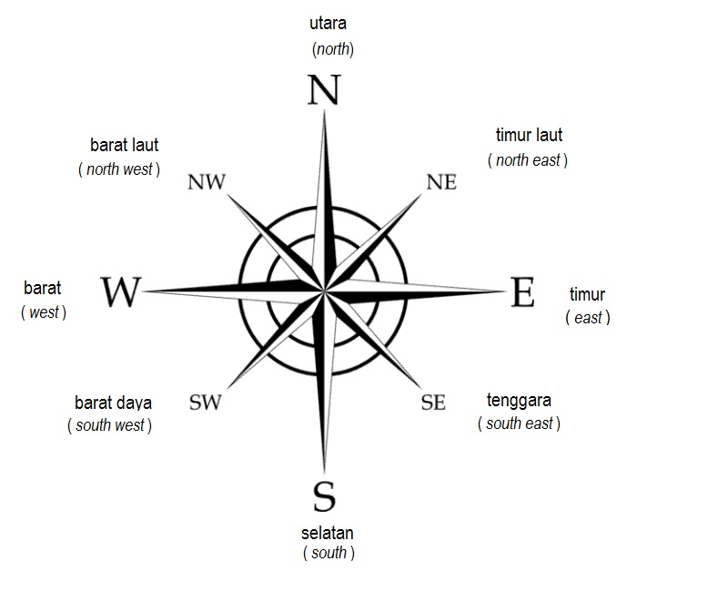

Nyoman, Jane,and Billy were making journey to Uluwatu. They were heading to a hill where Uluwatu temple was located to admire the greatness of temple and the beauty of Hindia Ocean.
| Billy : | Wah, Indah sekali. Wow, it's so amazing. |
|
| Nyoman : | Itu! Puranya di atas bukit. Kita juga bisa melihat kera disana. There! The temple is on the top of the hill. we can also see monkeys there. | |
| Jane : | Benarkah?. Really? | |
| Billy : | Lihat disana, Jane. Di pohon itu. Kera-kera itu berlari ke pucuk pohon. Wow, lucu sekali! Look over there, Jane. On that three. The monkeys are running to top of the three . They are so cute. | |
| Jane : | Ayo, cepat Bill. ambil gambarnya! Comeon , Bill. Take the picture. | |
| Nyoman : | Bagaimana ? kamu dapat fotonya , Bill ? How was that? Did u get the picture, Bill? | |
| Billy : | Ya. Hasilnya pasti bagus. Oh ya,Nyoman. Apa semua pura di Bali sama? Sure. The picture must be great. By the way, Nyoman, are all the temples in Bali the same? | Nyoman : | Pada dasarnya sama. Pura adalah tempat memuja Tuhan, tapi setiap pura punya sejarah sendiri. Basically, they are. The temple is a place to worship God, but every temple has it own history. |
| Billy : | Laut itu biru sekali! What a blue sea! |
| Nyoman : | Benar. Uluwatu dikenal dengan pura dan lautnya yang indah. Right, Uluwatu is well-known by its temple and beautiful sea. |
| Billy : | Benar-benar mengagumkan. Ombaknya luar biasa Boleh saya berselancar dibawah sana, Nyoman? It's wonderful. The wave is incredicble. May i surf down there, Nyoman. |
| Nyoman : | Lebih baik jangan. Disini berbahaya. Dipantai Dreamland saja. Disana ombaknya jauh lebih besar dan bagus, tetapi tidak berbahaya You'd better not. It's dangerous here. At Dreamland beach will be better. It has bigger and more fantastic wave, but it is not too dangerous |
| Billy : | Dimana tempatnya. Where is it. |
| Nyoman : | Tidak terlalu jauh dari sini. It's not too far from here. |
Billy : | Mau kah kamu mengantar kami kesana? Can you take us there? |
| Nyoman : | Dengan senang hati. My pleasure. |
Dengan senang hati is an expression that is used in place of yes in responding invitation
Jane, Billy and Nyoman were travelling to Tegalalang. Tegalalang is a small village near Ubud with a beautiful view of rice fields.
| Billy : | Sejuk sekali disini. It is very cold here. |
| Jane : | Wah. Baru kali ini saya melihat sawah bertingkat-tingkat. Wow. This is my first time to see such a terrace rice field. |
| Billy : | Semua tampak hijau, ya? It is all so green. |
| Jane : | Mengapa bisa begitu?. How could it be? |
| Nyoman : | Sistem sawah di Bali sangat istimewa. Balinese farming system is so special. |
| Jane : | Apa istimewanya? What is so special? |
| Nyoman : | Sistemnya bernama subak. Setiap sawah mendapat jumlah air yang sama The system is called subak. Every rice field gets the same amount of water. |
| Jane : | Padi dibagian paling bawah juga tumbuh subur dan hijau. The paddy at the lowest part grows well and looks green. |
| Billy : | Benar, Jane. Hebat sekali! Tanah berbukit bisa jadi sawah yang indah. Right, Jane. It is so great. Ahilly soil can be formed in to beautiful rice field. |
| Jane : | Selain bertani , penduduk disini bekerja apa? Besides farming, what do the villagers here do for living? |
| Nyoman : | Mereka membuat kerajinan tangan. Nanti kita mampir ke toko mereka. They make handycraft. We will stop by at their shops. |
| Jane : | Baiklah. Sure. |
Mampir in nanti kita mampir ke toko mereka means that they may just stop by at shop or they may stp and buy something at that shop.
| (1) | Ngaben is a cremation ceremony held by Balinese Hindu society. |
| (2) | Uluwatu is the name of a temple which is located at Pecatu hill in Jimbaran. |
| (3) | Dreamland is the name of beach which is also located in Pecatu area. |
| (4) | Subak is an irrigation system applied by Balinese farmers. With this system , every rice field gets enough portion of water. Therefore, Paddy can grow well. |
| (5) | Indonesia is a tropical country in which are only two seasons, rainy season and dry season. Rainy season falls between October and March , while dry season falls between April and September. |
| Bukit | Hill |
| Danau | Lake |
| Desa | Village |
| Gunung | Mountain |
| jalan | Street/road |
| Kota | City |
| Laut | Sea |
| Negara | Country |
| Pantai | Beach |
| Pulau | Island |
| Selat | Strait |
| Sungai | River |
a) Flora
| Pohon tree | beringin bakau cemara jati | banyan mangrove pine teak |
| Bunga flower | anggrek cempaka dahlia kamboja kembang sepatu mataharimawar melatiteratai | orchid torpical magnolia dahlia frangipani hisbiscus sun flowerrose jasminewaterlily |
b) Fauna
| Mamalia mammale | anjingbabi badak harimau kelelawarkera kijang/rusa kucing sapi | dogpig rhino(cheros) tiger batmonkey deer cat cow |
| Bunga flower | anggrek cempaka dahlia kamboja kembang sepatu mataharimawar melatiteratai | orchid torpical magnolia dahlia frangipani hisbiscus sun flowerrose jasminewaterlily |
| Burung Bird | angsa bebek burung merak cendrawasih elang merpati | swan duck peacock cendrawasih eagle pigeon/dove |
| Ikan fish | cumi-cumi emas lele mujaer pari tenggiriudang | squid goldfish catfish fresh water fish rayfish mackerelshrimp |
| reptil reptile | buaya cecak komodo tokek ular | crocodile house lizard komodo gecko snake |
| serangga insect | lalat nyamuk belalang kupu-kupu laba-laba lebah | fly mosquito grasshoper butterfly spider bee |

| Cerah | Fine |
| Dingin | Cold |
| Gelap | Dark |
| Hujan | Rain |
| Panas | Hot |
| Mendung | Cloudly |
| Terang | clear |
| Musim Kemarau | Dry season |
| Musim Hujan | Rainy season |
1. Eksklamative alangkah, wah, dan wow
Exclamative are usually used to express amazement and surprise. Exclamation are marked by the use of the words alangkah, betapa, or bukan main . For example :
| (1) | Alangkah senangnya kami di Indonesia .How happy we are in Indonesia. |
| (2) | Betapa merdunya suara penyanyi itu.How sweet the voice of that singer. |
| (3) | Bukan main birunya langit hari ini.How blue the sky is today. |
Besides alangkah, betapa and bukan main. wah and wow are also used to state amazement and surprise. But these words are often used in casual situation.For example :
| (4) | Wah, ternyata makanan ini enak sekali.How delicious this food is. |
| (5) | Wah, Indahnya.How beautiful. |
| (6) | Wow, pemandangan pantai sungguh indah.Wow, the view on this beach is so beautiful. |
2. Perintah
In Indonesia, Perintah or order contains instruction so that the listener does something asked by the speaker. In Indonesian order is formed by using acting word (without me- or ber-) with a rising intonation. For Example :
| (1) | Baca buku itu!Read that book! |
| (2) | Bangun, hari sudah siang!Get up, it is already late! |
| (3) | Lihat ombak itu!Look at the weaves! |
| (4) | Ambil gambar kera-kera itu,Bill!Take the picture of those monkeys,Bill! |
| (5) | Pergilah!Please,go! |